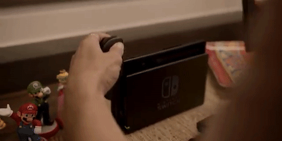
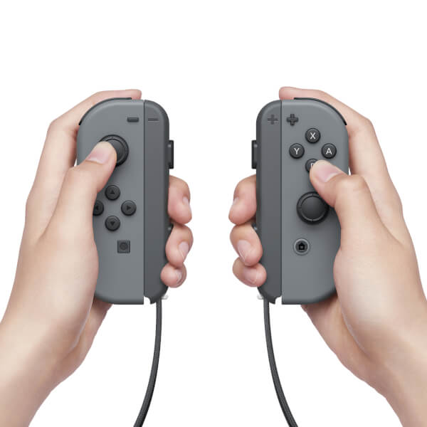

Juega en casa o juega en cualquier lugar
Coloca la consola Nintendo Switch en la base y juega en tu televisor de alta definición.
Retira la consola de la base para cambiar sin problemas al modo portátil.


La Switch utiliza dos controladores inalámbricos llamados en conjunto Joy-Con. Dos Joy-Con pueden conectarse uno a cada lado de la consola para usarse como consola portátil, conectarse al accesorio Grip proporcionado junto a la consola para usarlos como un mando más tradicional, o ser utilizados individualmente en la mano como el mando Wii, y de esta forma usarse con juegos multijugador locales.
los Joy-Con tambie incluyen cuatro botones de acción estándar y un joystick direccional, así como sensores para la detección de movimiento y retroalimentación táctil de alta definición.
Juega con amigos